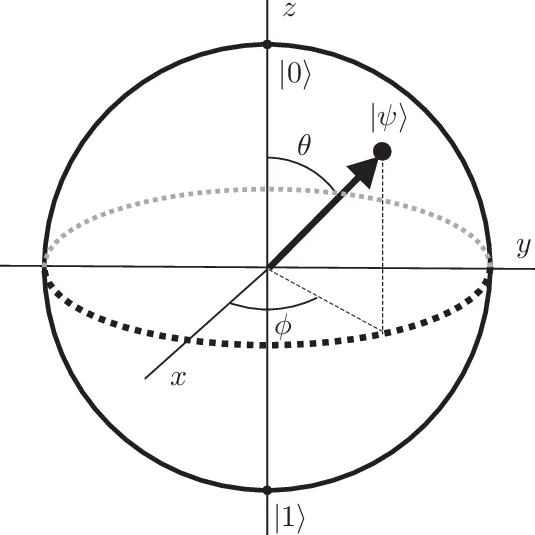

A computação quântica representa uma revolução na forma como processamos informações, explorando os princípios fundamentais da mecânica quântica. Vamos mergulhar mais fundo nos conceitos cruciais que distinguem essa abordagem da computação clássica.
No cerne da computação quântica estão os qubits. Ao contrário dos bits clássicos, que podem ser 0 ou 1, os qubits podem existir em uma superposição desses estados. Essa capacidade única permite que um qubit represente simultaneamente múltiplos valores, inaugurando uma nova era de processamento de informações.
A superposição é um fenômeno extraordinário, permitindo que qubits existam em uma combinação linear de estados de base. Isso possibilita a realização de cálculos em paralelo, explorando todas as soluções possíveis simultaneamente. Essa propriedade é a força motriz por trás da capacidade exponencial de processamento da computação quântica em comparação com a computação clássica.
O entrelaçamento quântico é uma característica intrigante. Quando qubits estão entrelaçados, as mudanças no estado de um qubit são instantaneamente refletidas no estado dos outros, independentemente da distância entre eles. Essa correlação quântica desafia a intuição clássica e é fundamental para protocolos quânticos de comunicação e algoritmos quânticos avançados.
Ao realizar uma medição em um qubit em superposição, ocorre o colapso quântico, levando o qubit a um estado específico. A probabilidade desse colapso é determinada pelas amplitudes quânticas associadas. Esse processo probabilístico distingue a medição quântica da medição determinística em sistemas clássicos.
Para obter mais informações, consulte mais detalhes.
Ingressar na área de computação quântica pode ser empolgante, mas é importante ter em mente que é uma disciplina desafiadora que requer um sólido entendimento da física quântica, programação e matemática avançada. Aqui estão alguns cursos e universidades que podem dar um maior aprofundamento sobre o tema
O termo Computação Quântica foi mencionado pela primeira vez 40 anos atrás, em 1982, quando o físico Richard Feynman demonstrou que nenhum computador clássico conseguiria modelar sistemas quânticos por causa das limitações existentes tanto na física clássica quanto na escala atômica. Segundo ele, somente simuladores quânticos universais seriam capazes de modelar tais sistemas. Mas afinal o que tudo isso significa? “A computação quântica pode ser definida como uma nova forma de computação, uma nova tecnologia a ser estudada e desenvolvida totalmente diferente da evolução tecnológica observada nos estudos da ciência da computação”, afirma Marino Hilário Catarino, professor da ESEG, Faculdades do Grupo Etapa.
Para ler a matéria completa clique aqui
A computação quântica oferece promessas revolucionárias em termos de poder de processamento e resolução de problemas complexos que são atualmente impraticáveis para computadores clássicos.
Para explorar mais, veja mais aplicações.
Explore os desafios atuais na computação quântica e as oportunidades emocionantes para pesquisa e desenvolvimento.
Para mais detalhes, consulte mais informações.
A Matemática Quântica é o alicerce teórico que sustenta as operações e preceitos da Computação Quântica. Em seu cerne, encontramos conceitos matemáticos profundos e fascinantes que delineiam a natureza intrincada do mundo quântico. Nesta jornada, focaremos em quatro fundamentos essenciais:
No coração da Matemática Quântica reside o conceito de Espaço de Hilbert. Este espaço vetorial complexo fornece a estrutura matemática para descrever estados quânticos. Imagine-o como um vasto reino onde as propriedades dos sistemas quânticos se desdobram e interagem.
Operadores lineares desempenham um papel crucial na Matemática Quântica, permitindo-nos modelar as transformações que ocorrem nos estados quânticos. São como as ferramentas matemáticas que capturam as dinâmicas complexas e evoluções dos sistemas quânticos ao longo do tempo.
A notação de Dirac, também conhecida como notação bra-ket, é uma linguagem simbólica poderosa na Matemática Quântica. Ela simplifica a representação de estados quânticos e operadores, proporcionando uma forma elegante e compacta de expressar conceitos complexos.
A Teoria de Grupos desempenha um papel fundamental na Matemática Quântica ao revelar as simetrias inerentes aos sistemas quânticos. Essas simetrias, expressas por meio de grupos, fornecem insights profundos sobre as características fundamentais dos fenômenos quânticos.
Esses são apenas alguns dos pilares da Matemática Quântica que moldam nossa compreensão da realidade em escalas subatômicas. Profundizar-se nesses fundamentos não apenas enriquece nosso entendimento teórico, mas também fornece as ferramentas essenciais para explorar e desenvolver algoritmos quânticos revolucionários na era da Computação Quântica.
Para mais detalhes, consulte Uma introdução à matemática da computação quântica.